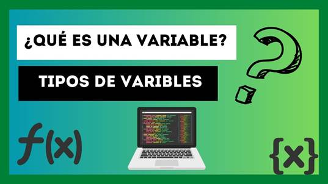
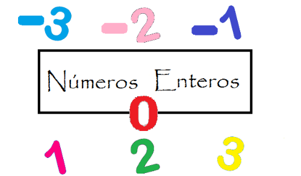
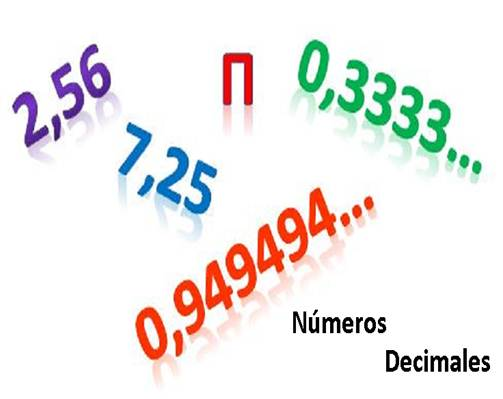

Variables
Enteros y Decimales

Las variables
en programación son espacios en la memoria del computador que se utilizan para almacenar datos.
Funcionan como una especie de contenedor con un nombre, que guarda un valor que
puede cambiar durante la ejecución del programa.
|
|
|

Las variables
enteras (o de tipo entero) son aquellas que almacenan números sin decimales,
es decir, valores como 1, -5, 200 o 0. Este tipo de variable se utiliza cuando
se trabaja con cantidades exactas, como el número de personas, la edad, la
cantidad de productos, etc.
En muchos lenguajes de programación, este tipo se representa con
la palabra clave int (de integer en inglés).
Ejemplo en C++:
int edad = 25;

Las variables
decimales son las que almacenan números con parte decimal, es decir,
aquellos que tienen punto o coma flotante, como 3.14, -0.5 o 12.75. Se usan
cuando se necesita más precisión, como en medidas, precios, porcentajes, etc.
En varios lenguajes, se usan palabras clave como float o double
para declarar este tipo de variable.
Ejemplo en C++:
float precio = 19.99;